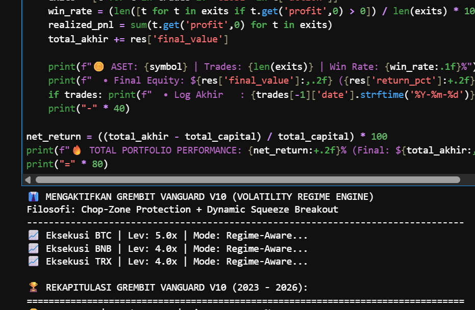
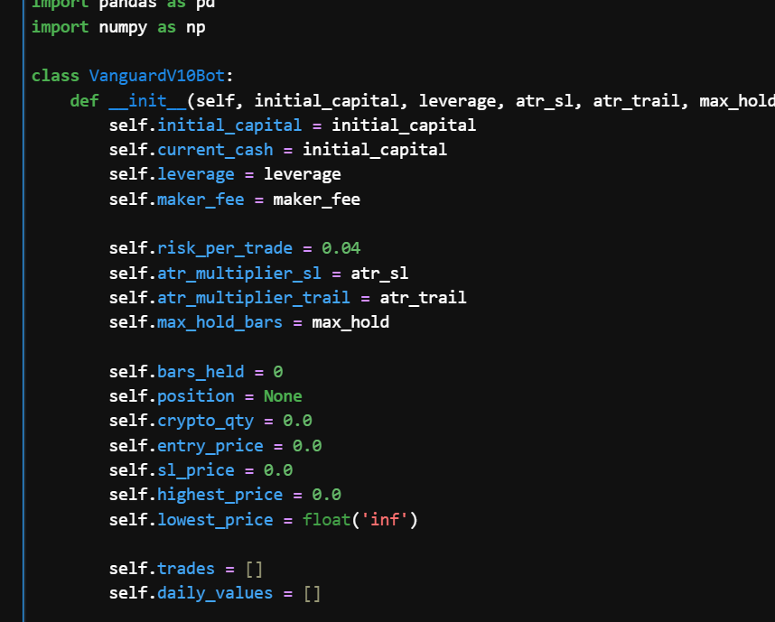
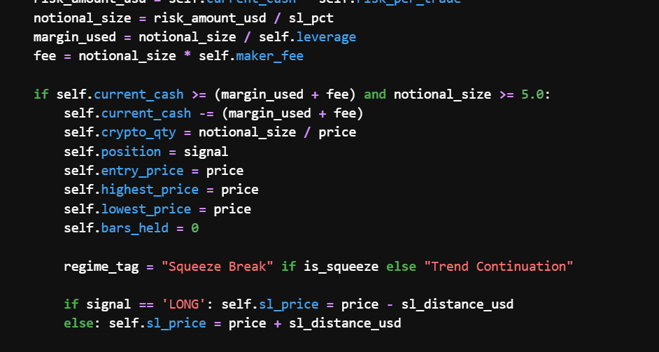

Grembit Fronton merupakan sistem directional engine di dalam ekosistem Grembit. Dirancang murni untuk merespons transisi mekanis dari fase konsolidasi sampai fase continuation atau reversal secara otonom.

Algoritma kuantitatif yang berfokus pada menangkap momentum dari fase continuation.
Fronton memproses data pasar melalui tiga lapisan penyaringan sebelum mengotorisasi eksekusi. Membaca data historis jangka panjang. Penyesuaian pada resolusi waktu yang lebih ketat untuk menentukan titik masuk (*entry*) dengan probabilitas kuantitatif optimal.

Sistem ini membuang target pencapaian harga yang statis dan menggantinya dengan protokol manajemen posisi yang beradaptasi secara real-time:
Parameter batas kerugian awal tidak menggunakan persentase baku, melainkan dikalibrasi secara algoritmik berdasarkan metrik fluktuasi historis aset saat itu.
Titik keluar (exit point) dirancang untuk bergerak secara dinamis mengikuti rentang pergerakan puncak, memungkinkan sistem mengunci nilai maksimal selama siklus tren masih berlangsung.
Algoritma diprogram untuk mempertahankan posisi pada aset yang menunjukkan kekuatan momentum berkelanjutan, mengoptimalkan probabilitas imbal hasil.
Integrasi berbagai parameter temporal secara drastis mengurangi tingkat eksekusi pada noise yang umumnya menjebak sistem.
Jarak toleransi risk dan penutupan posisi tidak bersifat kaku. Dikalkulasi secara terprogram menyesuaikan metrik fluktuasi dari setiap instrumen yang diperdagangkan.
Arsitektur kode disiapkan untuk Live Deployment, direncanakan untuk dibuat skrip yang beroperasi 24/7 di server awan (cloud) dengan integrasi API langsung untuk eksekusi secara otonom.

Tertarik untuk membangun relasi atau berkolaborasi? Diskusikan ide Anda sekarang.